Page 1 / 原始页码 19
第 2 章 分子
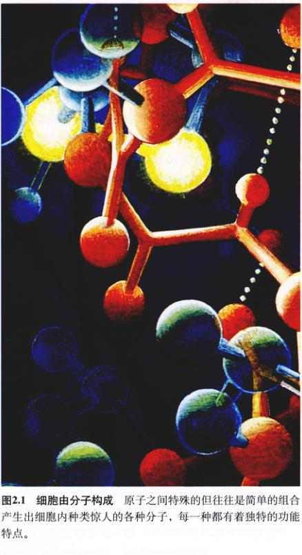
图 2.1 细胞由分子构成 原子之间特殊的但往往是简单的组合产生出细胞内种类惊人的各种分子，每一种都有着独特的功能特点。
大约 100 亿 ~ 200 亿年前，一场巨大的爆炸标志了宇宙的开始。随之而来的是进化过程的开始，最终导致了地球上生命的起源和分化。纵观这 200 亿年的历史，我们会发现，太阳系里的生命不过是距今几十亿年前才出现的。但是，为了更好地了解生命的起源，我们需要考虑一些更早发生的事件。导致生命进化的过程同样也是分子进化的过程（图 2.1），所以，我们对地球上生命起源的研究应该从物理和化学研究开始。作为一个复杂的化学系统本身，我们想要了解人类的由来必须先要了解化学。
Page 2 / 原始页码 20
2.1 原子是大自然的建筑材料
2.1.1 原子
宇宙里一切有质量（见下文）并占有一定空间的东西都称作物质 (matter)。所有的物质都由一些极小的微粒——原子 (atom) 构成。因为原子实在是太小了，研究起来相当困难，直到 20 世纪早期，科学家才设计出第一个实验来描述原子到底是什么样的。
1) 原子的结构
像原子那样小的物体只能通过复杂的技术手段，比如隧道显微镜来间接地“看到”。我们在现在已经对原子的复杂结构了解了不少，这都要归功于 1913 年丹麦物理学家尼尔斯·波尔开了个好头。波尔提出所有的原子都具有由一种比原子还小的称为电子 (electron) 的粒子所形成的轨道电子云，电子绕核旋转，就像一个微缩太阳系里的行星那样。原子的中心是一个极小的、密度很大的核，由两种小于原子的粒子，即质子 (proton) 和 中子 (neutron) 组成（图 2.2）。
在距离核内部，质子和中子靠一种在远小于原子直径的距离内才能起作用的力（即强相互作用力，又称核力。校者注）聚在一起。每个质子带一个正电荷 (+)，而每个电子带一个负电荷 (-)，一般来说原子带有的质子和电子是 1:1 的。质子的数目即原子的原子序数 (atomic number) 决定了原子的化学性质，因为它决定了能够参加化学反应的绕核运动的电子数。中子不带电，这也是其名称的由来。
2) 原子质量
质量 (mass) 和 重量 (weight) 这两个词经常混用，但实际它们在含义上有着微小的差别。质量指的是实际含有多少物质，而重量指的是施加在物质上的重力有多大。故而，同一个物体在地球和月球上具有相同的质量，但在地球上的重量却比在月球上大，因为地球的引力比月球大。原子质量 (atomic mass) 等于原子的所有质子和中子质量之和。地球上自然存在的原子含有 1~92 个质子，最多有 146 个中子。
衡量原子和亚原子微粒的质量单位叫做道尔顿 (Dalton, 简称 D)。这个单位有多小呢？需要 6.02 × 1023 D 才等于 1g！一个质子的质量约等于 1 道尔顿（实际上是 1.009 D），一个中子也差不多 (1.007 D)。相比之下，电子仅重 1/1840 D，所以与整个原子的质量相比，它们的质量可以忽略不计。
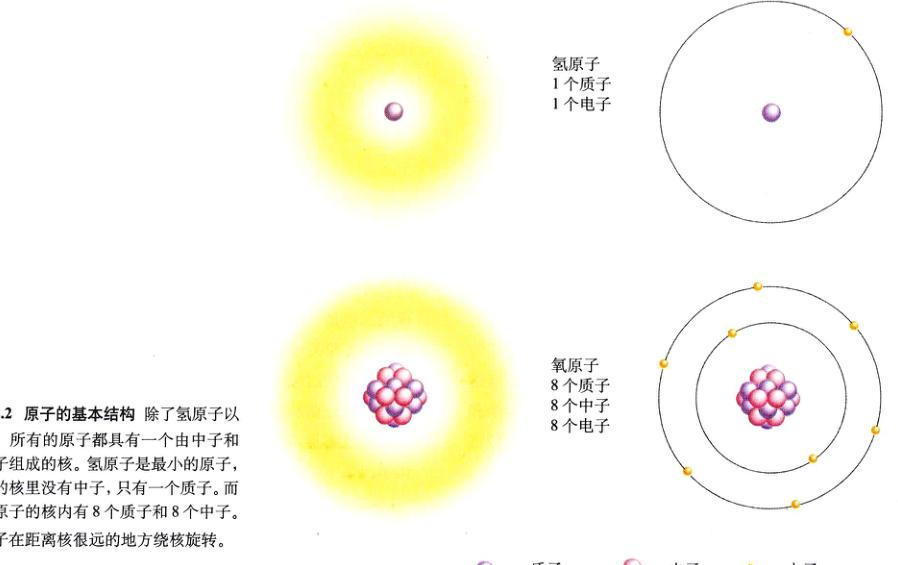
图 2.2 原子的基本结构 除了氢原子以外，所有的原子都具有一个由中子和质子组成的核。氢原子是最小的原子，它的核里没有中子，只有 1 个质子。而氧原子的核内有 8 个质子和 8 个中子。电子在距离核很远的地方绕核旋转。
Page 3 / 原始页码 21
3) 核素
原子序数相同（就是具有相同数目质子）的原子，具有相同的化学性质，都属于同一种元素 (element)。准确的说，元素就是不能通过任何普通的化学方法分裂成其他物质的物质。但是，尽管一种元素的所有原子都含有同样多的质子，它们却可能具有不同的中子数，具有不同中子数的同种元素原子叫做该种元素的核素 (isotope)。自然界的大多数元素往往是几种核素的混合物，比如碳具有 3 种核素，都具有 6 个质子（图 2.3）。自然界里超过 99% 的碳都是具有 6 个中子的核素，因为它的质量是 12D（6 个质子加上 6 个中子），这种核素又叫做碳-12，记为 12C；其余大部分是碳-13，这种核素有 7 个中子；最稀少的碳核素是碳-14，与前两种不同的是，14C 不稳定，它的核会分裂成原子序数更低的元素。这种会释放出大量能量的核破裂，叫做放射性衰变，会发生这种衰变的核素叫做放射性核素 (radioactive isotope)。
有一些放射性核素比其他的更不稳定，更易衰变。但对于任意一种给定的核素来说，它的衰变率是一定的。衰变率通常表示为半衰期 (half-life)，是样品中一半原子发生衰变的时间。举例来说，碳-14 的半衰期为 5600 年，今天含有 1g 碳-14 的样品，5600 年后将剩下 0.5g 碳-14，11200 年后只剩 0.25g，而距今 16800 年后就只剩下 0.125g，以此类推。通过测定岩石或生物试样中碳或其他元素不同的核素含量的比率，科学家可以精确地测出样品形成的时间。
放射性核素有很多用处，但是在使用放射性核素的时候必须要注意考虑到它有害的一面。放射性核素会释放出高能的粒子，有可能对活细胞造成严重伤害，导致基因突变，高剂量时甚至会使细胞死亡。因此，暴露在放射源下的操作要小心地加以控制和调节。
4) 电子
原子核所带的正电性被在不同轨道绕核旋转的带负电的电子中和，所以具有相同质子数和电子数的原子是中性不带电的。
电子被带正电的核吸引而固定在轨道上，这种吸引力有时会被其他力所抵消，原子就会失去一个或几个电子。另外一些情况下，原子会获得额外的电子。电子数不等于质子数的原子就是离子 (ion)，电荷带有一定的电性。原子多于电子的原子带有净的正电，是阳离子 (cation)，比如钠 (Na) 失去一个电子就成为钠离子 (Na+)，带电 +1。质子比电子少的原子带有净的负电，叫做阴离子 (anion)，一个氯原子 (Cl) 得到一个电子后成为氯离子 (Cl-)，带电 -1。
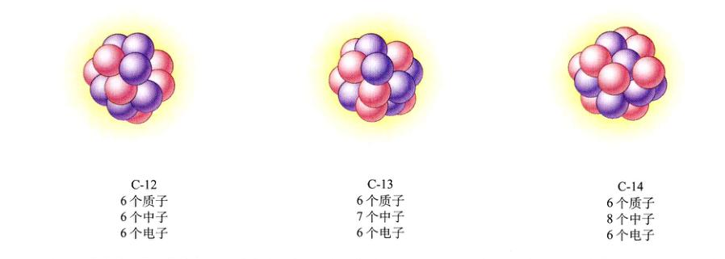
图 2.3 含量最丰富的三种碳的核素 元素的核素含有不同数目的中子。碳-12：6 个质子，6 个中子，6 个电子；碳-13：6 个质子，7 个中子，6 个电子；碳-14：6 个质子，8 个中子，6 个电子。
Page 4 / 原始页码 22
2.1.2 电子决定了原子的化学性质
决定原子化学性质的关键在于核外电子在轨道上的排布。尽管把单个电子想象成在分离的圆轨道上绕着原子核中心旋转是很方便的，就像波尔的原子模型那样，但是这种结构并不是原子的真实结构。要想知道单个电子在某一时刻的准确位置是不可能的。实际上，某个特定的电子在给定时刻有可能出现在任何地方，从离核很近到无限远。
但是，某个特定的电子在某些位置出现的几率更大一些。核周围电子最可能出现的位置就叫做电子轨道 (orbital)（图 2.4）。近核的轨道是球形的 (s 轨道)，其他轨道是哑铃形的 (p 轨道)，还有一些离核较远的轨道可以具有其他的形状。不论什么形状，一个轨道上都不可能含有两个以上的电子。
原子所占的体积几乎都是空的，因为与核的体积相比电子离它的距离要大得多。如果原子核像一个苹果那样大小的话，那么最近的电子轨道也在 1600m 以外。因此，在自然状态下两个原子的核不可能接近到足以相互作用的距离，正因如此，决定原子化学状态的是核外电子而不是质子或中子。同种元素所有的原子都具有相同的电子排布，所以也就具有相同的化学性质。
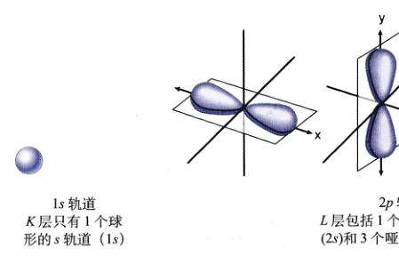
图 2.4 电子轨道 K 层是能量最低的能级，或者叫电子壳层，它离核最近。它只有一个 s 轨道，记为 1s。下一个能量稍高的能级是 L，有 4 个轨道，包括 1 个 s 轨道（记为 2s 轨道）和 3 个 p 轨道（每个都叫 2p 轨道）。4 个 L 能级轨道紧密地填充了核周围的空间，像两个底座相对的棱锥。
原子的能量
所有的原子都具有一定的能量，也就是具有做功的能力。因为电子被带正电的核吸引，把它固定在一定的轨道上就需要做功，就好象把一个葡萄拿在手里需要克服地球引力做功一样（把葡萄拿在手中是不需要做功的，电子在某一特定的轨道运行，也不需要外界做功。但无论葡萄还是电子，在这种状态下都具有能量。改变原有状态，则需要做功。校者注）。葡萄因为它的位置而具有了一定的势能 (potential energy)，一种做功的能力，如果你松手，葡萄就会下落，它的势能就会减少；相反，如果你拿着葡萄登楼，你就会增加葡萄的势能。与之相似，电子也具有由位置决定的势能，要反抗核的吸引并把电子移到一个离核更远的轨道上去，需要输入能量，从而使电子具有了更大的势能。这就是叶绿素怎样在光合作用中吸收光能的（第 10 章）——光激发了叶绿素中的电子。把一个电子移到离核较近的地方会有相反的作用——能量通常会以热的形式被释放，电子的势能降低（图 2.5）。
每个原子的能量都不是连续的，而是像台阶上的葡萄所具有的势能一样，电子位置决定的原子势能只能具有某些特定的值。每个原子都呈现一系列的梯级势能的值，对应着一组与核具有特定距离的离散轨道，而不是连续的谱。
在某些化学反应中，电子会在不同的原子之间转移，在这些反应里，失去电子的过程叫做氧化 (oxidation)，得到电子的过程叫做还原 (reduction)（图 2.6）。值得注意的是，在这种转移过程中，电子的势能并没有改变。在生物体内，化学能由高能级的电子储存，这些电子在氧化-还原反应中从一个原子转移到另一个原子。
由于电子所具有的能量和它到核的距离有关，离核同样远的电子具有相同的能量，即使它们在不同的轨道上，即这些电子处于相同的能级 (energy level)。在原子的示意图上（图 2.7），核用一个小圈表示，电子的能级则画成一些同心圆，离核越远能级越高。注意不要把能级和电子轨道相混淆，能级画面成圆圈来表示电子的能量，而电子轨道具有很多种三维结构，表示的是电子最可能出现的位置。
Page 5 / 原始页码 23
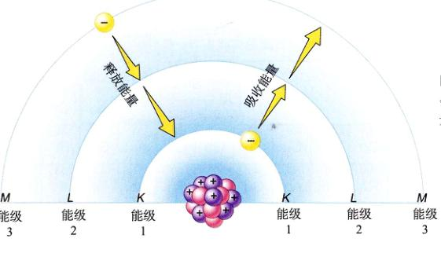
图 2.5 原子能级 当电子吸收能量时，它就会移到距离核较远的高能级上去。当电子释放能量的时候，它就会移动到距离核较近的低能级。

图 2.6 氧化和还原 氧化是失电子；还原是得电子。
2.2 组成生命的原子都在最小的原子之列
2.2.1 原子种类
自然界有 92 种元素，每一种都具有不同的质子数与核外电子排布方式。19 世纪俄国化学家季米特里·门捷列夫 (Dmitri Mendeleev) 在把已知的元素按原子质量排列在表格（图 2.8）中时，发现了科学上一个最伟大的规律，门捷列夫发现元素的化学性质呈现出某种特殊的规律，每 8 种元素重复一次，这种周期性重复的模式赋予了表格一个名字：元素周期表。
1) 元素周期表
门捷列夫所发现的 8 种元素的周期性是以不同元素外层电子之间的反应为基础的，这些电子叫做价电子 (valence electron)，它们之间的相互作用是元素具有不同化学性质的基础。对于大多数对生命重要的元素，一般最外层能级所容纳的电子不超过 8 个，其化学性质反映了这 8 个位子当中被占用了几个。最外层能级含有全部 8 个电子（氦是两个）的元素是惰性的 (inert)，或者说不活泼的，包括氦 (He)、氖 (Ne)、氩 (Ar)、氪 (Kr)、氙 (Xe) 和氡 (Rn)。与之形成鲜明对比的是，最外层含有 7 个电子（就比 8 少一个）的元素，比如氟 (F)、氯 (Cl) 和溴 (Br)，都非常活跃，它们倾向于获得一个额外的电子来填满最外层的能级；最外层只有一个电子的元素，如锂 (Li)、钠 (Na) 和钾 (K)，也非常活跃，它们会失掉最外层的那个电子。
门捷列夫的周期表引出了一个非常有用的规则——八电子规则 (octet rule or rule of eight)：原子趋向于建立全满的最外层能级。结合原子平衡正负电性的趋向，大多数化学反应的性质可以根据这条简单的原则准确地推测。
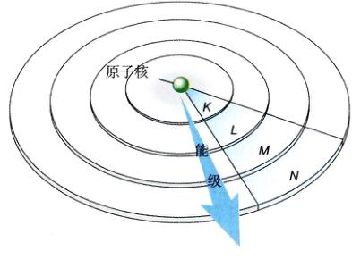
图 2.7 氮和氩的电子能级 金色的圆球代表了电子。每个同心圆代表着与核的不同距离，也就是表示了不同的能级。
Page 6 / 原始页码 24
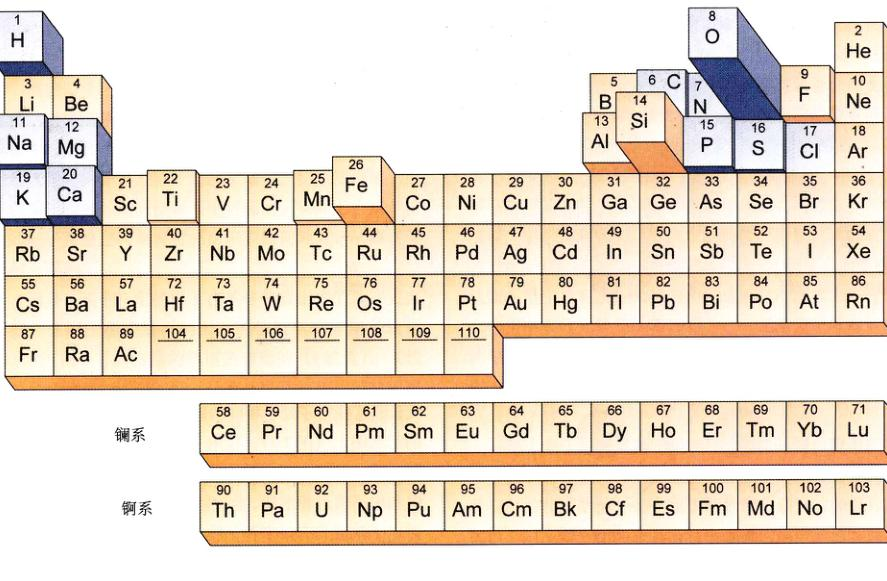
图 2.8 元素周期表 在本表中，存在于地壳中的元素的频率用方格的高度来表示，生物体内的重要元素用蓝色表示。
2) 元素的分布
在地球上自然存在的 92 种元素当中，在生物体中含量超过痕量的（≥ 0.01%）只有 11 种。这 11 种元素的原 子序数均小于 21，相应的原子质量均较小。表 2.1 列出了人体中各种元素的水平，它们在其他生物体中的含量水平也大致如此。浏览这张表会发现，生物系统中的元素分布绝不是偶然形成的，有机体中很多最丰富的元素并不是地壳中含量最多的。比如，硅、铝和铁在地壳中占了 39.2%，但在人体中只以痕量存在；另一方面，碳原 子在人体中占了 18.5%，在地壳中却仅占 0.03%。
2.3 化学键形成分子
2.3.1 离子键形成晶体
相互结合且能量稳定的一组原子叫做分子 (molecule)。当分子中含有一种以上元素的原子时，就叫做化合物 (compound)。分子当中的原子通过化学键 (chemical bond) 互相连接，这种键的形成是由于带有相反电性的原子互相吸引（离子键），或两个原子共享一对或几对电子（共价键），或原子予以外的其他方式相互作用。我们先从由带有相反电性的原子互相吸引而形成的离子键 (ionic bond) 开始讨论。
Page 7 / 原始页码 25
表 2.1 地球上最丰富的元素及它们在人体中的分布
| 元素 |
符号 |
原子序数 |
占地壳总重百分比 |
占人体总重百分比 |
功能及重要性 |
| 氧 | O | 8 | 46.6 | 65.0 | 细胞呼吸所需，水的组分 |
| 硅 | Si | 14 | 27.7 | 痕量 | |
| 铝 | Al | 13 | 6.5 | 痕量 | |
| 铁 | Fe | 26 | 5.0 | 痕量 | 血红蛋白的关键成分 |
| 钙 | Ca | 20 | 3.6 | 1.5 | 骨骼和牙齿的组分，激发肌肉收缩 |
| 钠 | Na | 11 | 2.8 | 0.2 | 细胞外的液体主要阳离子，参与神经活动 |
| 钾 | K | 19 | 2.6 | 0.4 | 细胞内的液体主要阳离子，参与神经活动 |
| 镁 | Mg | 12 | 2.1 | 0.1 | 很多能量转移酶的关键成分 |
| 氢 | H | 1 | 0.14 | 9.5 | 电子载体，水和很多有机分子的组分 |
| 锰 | Mn | 25 | 0.1 | 痕量 | |
| 氟 | F | 9 | 0.07 | 痕量 | |
| 磷 | P | 15 | 0.07 | 1.0 | 核酸的骨架，重要的能量中介 |
| 碳 | C | 6 | 0.03 | 18.5 | 有机分子的骨架 |
| 硫 | S | 16 | 0.03 | 0.3 | 大部分蛋白质的成分 |
| 氯 | Cl | 17 | 0.01 | 0.2 | 细胞外液的主要阴离子 |
| 钒 | V | 23 | 0.01 | 痕量 | |
| 铬 | Cr | 24 | 0.01 | 痕量 | |
| 铜 | Cu | 29 | 0.01 | 痕量 | 很多酶的重要成分 |
| 氮 | N | 7 | 痕量 | 3.3 | 一切蛋白质和核酸的成分 |
| 硼 | B | 5 | 痕量 | 痕量 | |
| 钴 | Co | 27 | 痕量 | 痕量 | |
| 锌 | Zn | 30 | 痕量 | 痕量 | 一些酶的关键成分 |
| 硒 | Se | 34 | 痕量 | 痕量 | |
| 钼 | Mo | 42 | 痕量 | 痕量 | 许多酶的关键成分 |
| 锡 | Sn | 50 | 痕量 | 痕量 | |
| 碘 | I | 53 | 痕量 | 痕量 | 甲状腺激素的成分 |
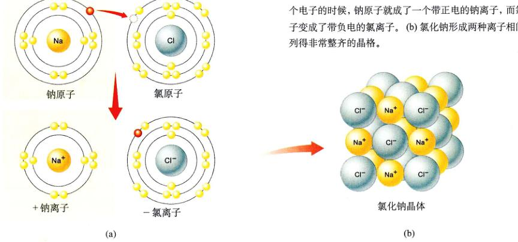
图 2.9 氯化钠离子键的形成 (a) 当钠原子提供给氯原子一个电子的时候，钠原子就成了一个带正电的钠离子，而氯原子变成了带负电的氯离子。(b) 氯化钠离子形成两两相间排列得非常整齐的晶体。
Page 8 / 原始页码 26
近看食盐
普通的食盐，也就是氯化钠 (NaCl)，是一些被离子键连在一起的反面电荷的晶格（图 2.9）。钠原子有 11 个电子；最里面的能级上有 2 个，下一级上有 8 个，最外面有 1 个（价电子）。电子是不成对的（自由的），并有很强的再结合 1 个电子的趋向。如果价电子转移给另外一个同样也带着一个未成对电子的原子，就会形成一种稳定的结构，失掉这个价电子使钠原子变成了带有 1 个正电荷的钠离子 (Na+)。
氯原子含有 17 个电子：2 个在最里面的能级，然后是 8 个，最外面有 7 个。所以，在最外层能级的轨道上有 1 个未成对电子，加上 1 个外来电子后，能级被填满，形成了 1 个带负电的氯离子 (Cl-)。
如果把金属钠和气态的氯放在一起，它们就会立刻发生剧烈的反应。钠原子提供给氯原子一个电子，形成 Na+ 离子和 Cl- 离子，由于异性电荷相吸引，Na+ 和 Cl- 形成离子化合物 (ionic compound)，成为电中性的 NaCl。但是，这种静电引力并不是存在于某个钠离子与某个氯离子之间，也没有单个的氯化钠分子形成。实际上，这种力存在于任意两个相邻的带有异号电荷的离子之间，这些离子聚集成具有规则几何形状的结晶物质，这就是我们所熟悉的盐晶体。如果把像氯化钠之类的盐放到水里，水分子的静电引力将会破坏晶体中离子间的引力（这一点本章后面有论述），使盐溶解，形成自由的 Na+ 离子和 Cl- 离子大致相等的混合溶液。
2.3.2 共价键构筑稳定分子
当两个原子共享一对或几对电子的时候就形成了共价键。以氢 (H) 为例，每个氢原子都具有 1 个未成对电子和 1 个未被填充的外层能级，因此氢原子是不稳定的。当两个氢原子足够接近的时候，每个原子的电子可以同时绕着两个核旋转，事实上形成两个核共享一对电子，于是形成了氢气的双原子分子（图 2.10）。
由两个氢原子形成的分子之所以稳定，是由于以下 3 个原因：
① 它不带电：由共享电子对形成的双原子分子不带有电性，因为它仍然含有两个质子和两个电子。
② 满足八电子原则：每个氢原子都可以看成在最外层能级上有两个电子绕核旋转，这就满足了八电子原则，因为每个共享的电子都围绕两个核旋转，并填充在两个原子的最外层能级上。
③ 没有未成对电子：两个原子之间的键使两个未成对电子成一对。与离子键不同，共价键形成于特定的原子之间，生成真实的、独立的分子。离子键可以形成规则的晶体，而共价键造成的更特异性的连接则能够生成更为复杂的分子结构。
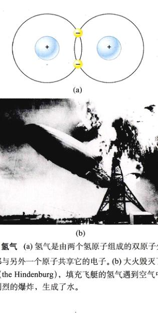
图 2.10 氢气 (a) 氢气是由两个氢原子组成的双原子分子，每个原子都与另外一个原子共享它的电子。(b) 大火毁灭了兴登堡号飞艇 (the Hindenburg)，填充飞艇的氢气遇到空气中的氧气发生了剧烈的爆炸，生成了水。
1) 共价键可以很强
共价键的强度由共享电子对的数目决定。因而两个原子共享两对电子形成的双键 (double bond) 要比共享一对电子形成的单键 (single bond) 强，也就是说断裂双键比断裂单键需要更多的化学能量。最强的共价键是三键 (triple bond)，就像氮气分子中连接两个氮原子的键。在化学式中，共价键用连接在原子符号之间的短线表示，两对电子之间的每根短线表示一对共用电子。氢气和氧气的结构式 (structural formulas) 分别是 H-H 和 O=O，而它们的分子式 (molecular formulas) 是 H2 和 O2。
2) 具有多个共价键的分子
很多分子是由两个以上的原子构成的，能够形成这种较大分子的原因之一是某些原子可以和多个原子共享电子对。一个原子如果需要两个、3 个甚至 4 个额外的电子才能完全填满它的最外层能级的话，也许就需要和两个或两个以上的其他原子共用电子。
举个例子来说，碳原子 (C) 含有 6 个电子，最外层能级上有 4 个。为了满足八电子原则，碳原子必须获得另外 4 个电子，也就是说，它必须形成 4 个共价键。因为 4 个共价键可以以很多形式形成，所以可以生成很多不同的分子以中找到碳原子。
Page 9 / 原始页码 27
3) 化学反应
形成新的化学键或断裂原有的化学键叫做化学反应 (chemical reaction)，这是化学的精髓所在。一切化学反应都涉及原子在分子或离子化合物之间的转移，而原子的种类和数量都不改变。为了方便起见，我们把反应开始之前的分子叫做反应物 (reactant)，由化学反应生成的那些分子叫做产物 (product)。比如：
A - B + C - D → A - C + B + D
反应物 产物
化学反应发生的程度受以下几个因素的影响。
(1) 温度：加热反应物能够使反应速率加快（但是温度不能过高，以免分子被破坏）。
(2) 反应物和产物的浓度：可供使用的反应物越多，反应过程进行得越快。产物的积累则会使反方向进行的反应加快。
(3) 催化剂：催化剂是能使反应速率加快的物质。它不会影响反应物和产物之间的化学平衡，但是它通常会显著缩短达到化学平衡的时间，通常效果明显。在生物体内，一类叫做酶的蛋白质催化了几手每一步化学反应。
2.4 水是生命之源
2.4.1 水的化学性质
在地球上所有的常见分子当中，只有水 (water) 能够在地球表面这种相对较低的温度下以液态大量存在，覆盖了 3/4 的地球表面（图 2.11）。在生命起源的过程中，水提供了重要的媒介：在水中，其他的分子可以自由移动并相互反应，避免了被很强的共价键或离子键困在一个地方。生命的进化是这些相互作用的结果，并至今与水有着不解之缘。生命起源于水，并在水中进化了 30 亿年，才开始向陆地发展。任何生物体的大约 2/3 都是由水组成，而且所有生物体都必须在含水丰富的环境中才能生长繁殖。热带雨林中生命丰富多样，而沙漠则是未毛之地，除非那里出现暂时的丰富水源，比如在暴雨之后，这绝非偶然。
水的分子结构
水的分子结构很简单，它由一个氧原子通过单键和两个氢原子相连组成（图 2.12a）。形成的分子是稳固的：它满足八电子原则，没有未成对电子，并不带净电荷。
水与众不同的化学特性是，它能够形成具有其共价键 5% 到 10% 强度的弱化学连接。这个由水的结构造成的特性，是生命化学中的大部分结构紧密相关。
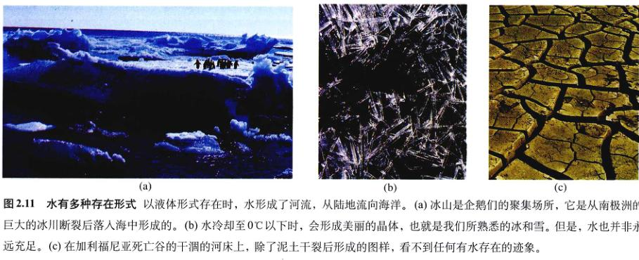
图 2.11 水有多种存在形式 以液体形式存在时，水形成了河流，从陆地流向海洋。(a) 冰山是企鹅的聚集场所，它是从南极洲的巨大的冰川断裂后落入海中形成的。(b) 水冷却至 0°C 以下时，会形成美丽的晶体，也就是我们所熟悉的冰和雪。但是，水也并非永远充足。(c) 在加利福尼亚死亡谷的干涸的河床上，除了泥土干裂后形成的图样，看不到任何水存在的迹象。
Page 10 / 原始页码 28
2.4.2 水分子好像小小的磁铁
水分子中的氧原子和氢原子，都吸引共价键中它们所共享的电子，这种吸引作用叫做电负性 (electronegativity)。但是，氧原子的电负性比氢原子的大，所以它对电子的吸引作用比氢原子强，结果是，水分子中的共用电子对更趋近于氧原子核。氧原子强烈的吸引作用，使氧原子带有两个单位的部分负电荷 (δ-)，就像电子云在氧原子周围要比在氢原子周围密度大一样。因为水分子整体上是电中性的，所以每个氢原子就带有了一个单位的部分正电荷 (δ+)。希腊字母 δ 代表部分电荷，比一个整电荷要弱得多。
你认为水分子的形状是什么样的？水分子的每个共价键的两端都带有部分电荷，氧端是 δ-，而氢端是 δ+。这种情况下最稳定的结构是四面体型，其中的两个负电荷和两个正电荷彼此近似等距（图 2.12b），氧原子处在四面体的中心，氢原子占据了两个顶点，两个负电荷占据了另外两个顶点，这使得两个氢氧条键之间形成了 104.5° 的键角（在正四面体中，键角应该是 109.5°；在水分子中，部分负电荷比氢原子占有更大的空间，于是略微压缩了氧-氢共价键的键角）。
这样一来，水分子就出现了不同的“端”，每端都带有部分电性，就像磁铁的两极（只是这部分电荷比单位电荷要弱得多），正负电荷中心相分离的分子叫做极性分子 (polar molecule)，因为它们具有像磁铁一样的极。水分子是已知的最具极性的分子之一。水分子的极性是它的化学性质和生命的基础。
极性分子之间会互相作用，因为一个分子的 δ- 会被另一个分子的 δ+ 所吸引。因为很多这种相互作用中都涉及氢原子，所以它们被称为氢键 (hydrogen bond)（图 2.13）。单独的每个氢键都非常微弱和短暂，平均持续 1/100 000 000 000s (10-11s)，但是，大量氢键的累积效应是巨大的。水会形成丰富的氢键，这是许多重要的物理性质的基础（表 2.2）。
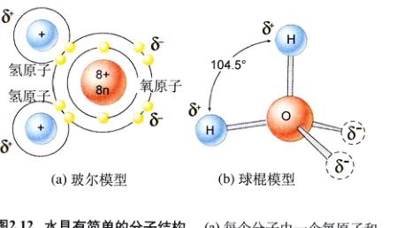
图 2.12 水具有简单的分子结构 (a) 每个分子由一个氧原子和两个氢原子组成。氧原子和每个氢原子分别共享一个电子。(b) 氧的强电负性使水分子具有了极性 水在氧原子附近带有两个部分负电荷 (δ-)，而两个氢原子上分别带有一个部分正电荷 (δ+)。

图 2.13 氢键的结构
表 2.2 水的性质
| 性 质 |
说 明 |
与生命的关系 |
| 内聚力 | 氢键使水分子聚集在一起 | 叶子将水从根吸上来，种子吸水膨胀和萌发 |
| 高比热 | 氢键断裂时吸热，形成时放热，缩小温度变化幅度 | 水使生物体和环境的温度保持稳定 |
| 高汽化热 | 水蒸发时必须断开许多氢键 | 水的蒸发使表面温度降低 |
| 冰密度低 | 由于氢键的原因使冰晶体中的水分子距离相对远 | 因为冰的密度比水小，湖水才不会整个冻结 |
| 高极性 | 极性水分子与离子和极性化合物相吸引，使它们能够溶解 | 许多分子在细胞中能够自由移动，使各种化学反应能级进行 |
Page 11 / 原始页码 29
2.4.3 水分子结合极性分子
水分子所具有的极性使它和其他的极性分子相互吸引。当其他的分子也是水分子时，这种吸引引叫做内聚力 (cohesion)；当其他的分子是另一种不同物质时，这种吸引就叫做附着力 (adhesion)。正是由于水具有内聚力，所以在常温下，它才是液态而不是气态形式存在。
液态水的内聚力同样造成了它的表面张力 (surface tension)。小昆虫可以在水面上如履平地（图 2.14），因为在空气—水的界面上，所有水分子的氢键都朝向下方，使水面上的水分子紧紧连接在一起。凡是能与水分子形成氢键的物质，都能附着水，这就是为什么含有极性分子（如玻璃、棉花）的物体会被水浸湿，而非极性物质（如油）就不会有这种现象。
水与像玻璃那样的表面带电的物质之间相互吸引，产生了毛细现象：如果一根直径很小的玻璃管浸入一杯水中，管内的水面会上升，比杯中的水面要高，这是因为使水上升的水和玻璃表面的吸附作用比使水下降的重力作用更强，从而把水拉了上去。玻璃管越细，水和玻璃之间的静电力就越强，水面上就上升得越高（图 2.15）。
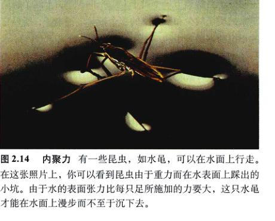
图 2.14 内聚力 有一些昆虫，如水黾，可以在水面上行走。在这张照片上，你可以看到昆虫由于重力而在水表面踩出的小坑。由于水的表面张力比每只足所施加的力要大，这只水黾才能在水面上漫步而不至于沉下去。
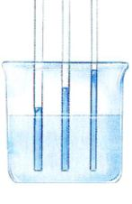
图 2.15 毛细作用 毛细作用导致细管中的水面高于周围液面；使水上升的力来自于玻璃表面对水的吸附作用，它比让水下降的重力要强。毛细管越细，对一定体积水的吸附表面积就相对越大，管中的水也就上升得越高。
1) 水储存热量
水通过两种特性来调节温度：高比热和高汽化热。温度是用来衡量任何物体中单个分子移动快慢的量度。由于水分子之间形成了大量的氢键，要想让水分子移动更自由，也就是具有更高的温度，就需要输入很大热能来断裂这些氢键，所以我们说水具有高比热 (specific heat)。比热就是将 1g 物质的温度改变 1°C 所必须吸收或放出的热量，它反映了物质在吸收或放出热量时抗拒温度改变的能力。因为极性物质能形成氢键，使这些氢键断裂需要能量，所以物质极性越强，比热越高。水的比热 (4.18 J/g·°C-1) 是大多数糖类的 2 倍，是铁的 9 倍。只有氨的气态极性比水更强，可以形成很强的氢键，比热水更高 (5.14 J/g·°C-1)。水从 0°C 加热到 100°C，也只断裂了 20% 的氢键。
正因为水的高比热，使水加热比加热几乎一切切物质都需要更长的时间，停止加热后温度的保持时间也更长。这个特点，使得含有大量水的生物体可以保持相对稳定的体内温度。如果细胞内没有高比热的水存在，胞内化学反应所产生的热量就会破坏细胞。
将 1g 液态水转化成气体需要相当大的热量 (2449.5J)，也就是说，水还具有很高的汽化热 (heat of vaporization)。因为需要吸收很大能量以断裂很多氢键才能达到该气态的相变，所以表面上水的蒸发可以降低该表面的温度。很多生物通过蒸发降温来排除体内多余的热量，比如人和许多脊椎动物都会出汗。
在低温下，水分子被固定在氢键形成的晶格里，形成我们称为冰的固体（图 2.16）。有趣的是，冰的密度要比液态水小，因为冰中的氢键使水分子相距较远。这个与众不同的特性使冰能够漂浮。如果不是这样的话，冰就会覆盖几乎所有的水体，只有表层的水每年能够融化一次。
2) 水是很强的溶剂
水是一种很有效的溶剂，因为它具有形成氢键的能力。水分子能在任何带电的物质周围聚集起来，不管它带的是整个的电荷（离子）还是只配了部分电荷（极性分子）。举个例子，蔗糖（食糖）是由带有弱极性的羟基 (-OH) 的分子组成的，糖能很快地溶解在水中，是因为水分子能和糖分子上的单个羟基形成氢键，这样蔗糖在水中就是可溶的，每当一个蔗糖分子从晶体上解离下来，水分子就立刻将其包围，形成水合层 (hydration shell)，阻止它与其他蔗糖分子结合。水合层也会形成在 Na+ 和 Cl- 那样的离子周围（图 2.17）。
Page 12 / 原始页码 30
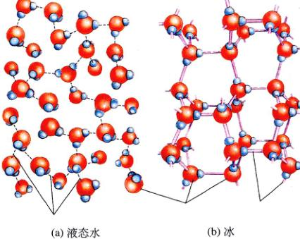
图 2.16 冰晶体中的氢键 (a) 在液态水中，氢键并不稳定，而是不断地断裂和形成。(b) 当水的温度降到 0°C 以下，氢键变得更加稳固，形成了一种规则的晶体结构，其中水分子的 4 个部分电荷都和周围水分子的异性电荷相互作用。因为水形成了晶体结构，冰的密度小于水而得以漂浮。如果不这样，远离赤道的内陆水体可能永远都不能完全解冻。
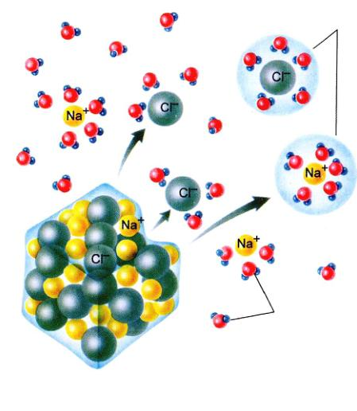
图 2.17 盐在水中怎样溶解 当食盐晶体溶解在水中的时候，单个的 Na+ 和 Cl- 离子从盐晶体上脱离下来并被水分子包围。水分子围绕着 Cl- 离子定向排列，以带有部分正电的极朝向 Cl- 离子；而围绕着 Na+ 离子的水分子则相反，以带有部分负电的极朝向 Na+ 离子。由于水合层外壳的包围，Na+ 和 Cl- 离子不再能进入到晶体当中。
3) 非极性分子在水中会发生重排
水分子总是尽可能多地形成氢键。像油一类的非极性分子不能形成氢键，当它们混在水中时，水分子会排斥它们。非极性分子被迫聚集在一起，以使它们对水氢键的干扰降到最低，结果是非极性分子尽可能地避免与水接触，这就是它们被称为疏水性 (hydrophobic) 的原因。相对而言，能够很容易与水形成氢键的极性分子就是亲水的 (hydrophilic)。
非极性分子在水中聚集的趋向称为疏水排斥 (hydrophobic exclusion)。水会迫使分子的疏水部分聚在一起，使这些分子呈现出一定的形状，不同的分子形状取决于非极性区域的部位和强度。生命的很多进化过程都反映了恰恰是由疏水排斥所导致的分子形状的变化。
2.4.4 水的电离
水分子中的共价键有时会自发地断开，纯水在 25°C 时，每 55 亿个水分子中只有一个发生这种断裂，断裂发生时分子会解离成一个质子（氢原子核），由于这个解离下来的质子缺少和氧共享的那个带负电的电子，所以它的正电荷不能被中和，成为一个带正电的离子 (H+)，水分子剩下的部分因保留了共价键中的共享电子而带有负电，形成氢氧根离子 (hydroxide ion) (OH-)。这种自发形成离子的过程叫做电离 (ionization)：
H2O → OH- + H+
水 氢氧根离子 氢离子 (质子)
25°C 下，每升水含有 10-7 mol 的氢离子。1 mol 定义为以克为单位的质量，数值上与分子中所有原子的相对原子质量之和相同。对于 H+ 来说，相对原子质量为 1，每摩尔 H+ 离子的质量便是 1 g。1 mol 的任何物质都含有该物质的 6.02 × 1023 个分子。也就是说，纯水中氢离子的摩尔浓度 (molar concentration)（表示为 [H+]）为 10-7 mol/L。实际上，氢离子通常是和另外一个水分子结合形成水合氢离子 (H3O+)。
1) pH值
有一个表示溶液中氢离子浓度的更方便的办法，就是使用 pH 标度 (pH scale)（图 2.18）。pH 值的定义是溶液中氢离子浓度的负对数：
pH = - log [H+]
Page 13 / 原始页码 31
因为氢离子浓度的对数值也就是 H+ 摩尔浓度的指数，所以 pH 值就相当于这个指数乘以 -1。在纯水中 [H+] 为 10-7 mol/L，pH 值就等于 7。又因为水电离时每形成 1 个 H+ 离子，就同时形成 1 个 OH- 离子，这意味着水中离形成等量的 H+ 和 OH-。这样，pH 值等于 7，在 pH 标尺上就表示中性，即 H+ 和 OH- 之间达到平衡。
pH 值标尺是对数单位，标尺上改变 1 就意味着氢离子浓度改变 10 倍。pH 等于 4 的溶液的 H+ 浓度是 pH 等于 5 的溶液的 10 倍。
(1) 酸 (acid)：在水中电离引起 H+ 离子浓度升高的任何物质都叫做酸，酸溶液的 pH 值小于 7。酸越强，它产生的 H+ 离子就越多，pH 就越低。举个例子，胃中富含的盐酸 (HCl) 能在水中完全电离，0.1 mol/L 的盐酸会电离形成 0.1 mol/L 的 H+ 离子，此溶液的 pH 为 1。由于溶有碳酸而冒着气泡的香槟酒的 pH 值大约是 2。
(2) 碱 (base)：在水中溶解时能够结合 H+ 离子的物质叫做碱。碱通过与 H+ 离子结合而降低溶液中的 H+ 离子浓度，所以碱溶液的 pH 值大于 7。像氢氧化钠 (NaOH) 那样的强碱，pH 值等于或大于 12。
2) 缓冲溶液
所有细胞的细胞内液，以及多细胞生物的细胞外液的 pH 值都非常接近 7。大多数生物体体系内的生物催化剂（酶）对 pH 值都极度敏感，pH 值的微小改变都常会导致酶的形状改变，从而破坏了它们的活性，使其变得毫无用处。正是由于这个原因，细胞必须维持一个恒定的 pH 水平。
生命的许多化学反应，都不可能地在细胞内产生酸和碱。更有甚者，许多动物食用酸性或碱性的物质。比如可乐，是非常强的酸溶液（虽然很稀）。虽然存在这样的改变 pH 值的因素，生物体的 pH 值还是能够保持在相对稳定的水平，这是因为有了缓冲溶液 (buffer)（图 2.19）。
缓冲溶液 (buffer) 是一种可以为氢离子的储存物质，当氢离子浓度降低的时候就把它释放到溶液中，当浓度升高的时候就把它收回来。哪类物质可以有这样的作用？生物体内，大多数的缓冲溶液都由一对物质组成，一个是酸，另一个是碱。人类血液中最主要的缓冲体系是一个由碳酸（酸）和碳酸氢根（碱）组成的酸—碱缓冲对，这两物质在一对逆反应中相互作用。
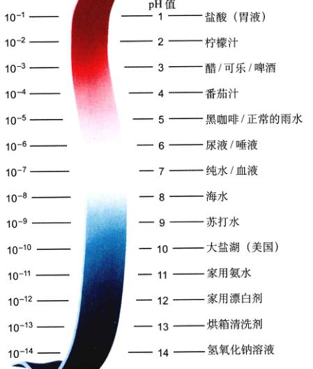
图 2.18 pH 标尺 溶液的 pH 值表示了溶液的氢离子浓度。pH 值小于 7 的溶液是酸性的，pH 值大于 7 的溶液是碱性的。标尺是对数单位，所以 pH 值改变 1 意味着氢离子浓度改变 10 倍。柠檬汁比番茄汁酸 100 倍，海水的碱性比 pH 为 7 的纯水大 10 倍。
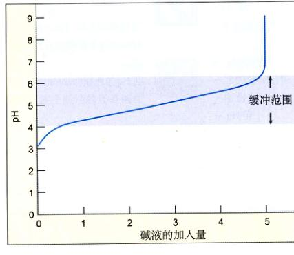
图 2.19 缓冲溶液的作用 缓冲溶液使 pH 的改变降到最小。意味着向溶液中加入碱中和了一部分酸，使 pH 值升高，也就是说，曲线向右移动意味着碱性增强，pH 值也更高。缓冲溶液的作用，就是让曲线在一定 pH 范围内升高或降低得非常缓慢，这个 pH 范围称为该缓冲溶液的“缓冲范围”。
Page 14 / 原始页码 32
首先，二氧化碳 (CO2) 和 H2O 反应生成碳酸 (H2CO3)，碳酸在第二个反应中电离形成碳酸氢根离子 (HCO3-) 和 H+（图 2.20）。如果血液中的物质增加了血液中的 H+，HCO3- 离子就起碱的作用，通过形成 H2CO3 来除去多余的 H+ 离子；与之相似，如果有碱性物质减少血夜中的 H+ 离子，H2CO3 就电离，向血液中释放 H+ 离子。正是 H2CO3 和 HCO3- 之间的可逆反应的正向和逆向进行稳定了血液的 pH。
二氧化碳与水生成碳酸的反应非常重要，因为它使生命所需的碳由空气进入到水中。在第 4 章我们将会讨论到，生物学家相信生命起源于原始海洋，由于二氧化碳与水的反应，使海洋中富含碳。
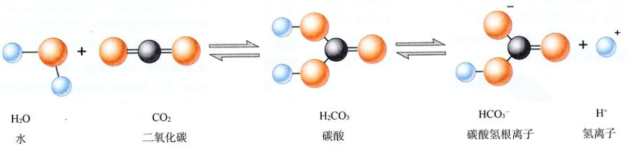
图 2.20 缓冲作用的形成 二氧化碳与水化合形成碳酸，碳酸随后在水中解离，释放 H+ 离子。这个反应使碳酸饮料呈酸性，同样也是这个反应使原始海洋富含碳，从而孕育了生命。
(张璋 陈洪涛 佟向军 译校)
Page 15 / 原始页码 33
小 结
2.1 原子是大自然的建筑材料
- 物质最小的稳定粒子是质子、中子和电子，它们联合起来形成原子。
- 原子的中心，或者叫核，由质子和中子组成；电子绕核运动形成电子云。电子离核越远，它具有的能量越大，运动也越快。
- 原子的化学性质很大程度上取决于它的电子排布，尤其是最外层（最高）能级上的电子数。原子形成满的最外层能级的趋势很强，可以通过失去、获得或者共享电子来达到这种状态。
2.2 组成生命的原子都在最小的原子之列
- 生物体重量的 95% 以上是由氧、氢、碳和氮组成的，它们之间会形成很强的共价键。
2.3 化学键形成分子
- 当电子在原子之间转移，造成带有相反电性的离子互相吸引，形成了离子键。
- 当两个原子共享电子时就形成了共价键。它是许多重要的生物分子形成的基础。
2.4 水是生命之源
- 生命的化学就是水 (H2O) 的化学。水分子的中心氧原子吸引它与两个氢原子共享的电子。这种电性的分布使水分子具有极性。
- 1 个分子中氢原子的部分正电荷与另一个原子的部分负电荷形成氢键。氢键可以存在于不同的分子之间，也可以是在同一个分子内的部分之间。
- 水分子具有内聚力和吸附力，又有很强的储热能力，对极性分子来说是很好的溶剂，并且会排斥非极性分子。
- 溶液的 H+ 浓度用 pH 值来表示，pH 值等于 H+ 浓度的负对数。
问 题
- 一个氯原子含有 7 个质子和 7 个中子。它的原子序数是多少？原子质量是多少？它有几个电子？
- 一种元素的同核核素间有何差别？
- 镭-226 的半衰期是 1620 年。如果某样品中含有 16 mg 镭-226，1620 年后样品中含有多少镭-226？3240 年后含有多少？样品中只含有 1 mg 镭-226 是过了多长时间？
- 什么是八电子原则，它怎样影响原子的化学性质？
- 离子键和共价键之间的区别是什么？请分别举例说明。
- 什么样的原子参与形成氢键？氢键对水的比热有什么贡献？
- 什么样的分子是疏水的？什么样的分子是亲水的？为什么这两类种分子在水中有不同的表现？
- 氢离子浓度为 10-3 mol/L 的溶液的 pH 值是多少？这种溶液是酸性的还是碱性的？
媒体资源
- 原子结构
- 基础化学
- 原子
- 技能测验：电子能级
- 技能测验：元素周期表
- 离子键
- 共价键
- 化学键
- 共价键构建了稳定的分子结构
- 水
- pH 值
- 水依附极性分子
- 技能测验：水的分子结构
- 溶剂水
- pH 值